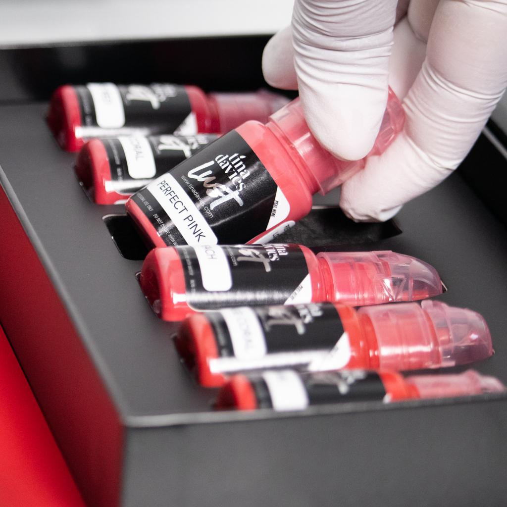

Phun Môi Màu Hồng Đất Có Đẹp Không? Hợp Với Ai?
Trong vài năm gần đây, màu hồng đất trở thành một trong những gam màu được lựa chọn nhiều tại các cơ sở phun xăm thẩm mỹ. Không quá rực rỡ như đỏ cam, cũng không quá nhẹ như hồng đào, hồng đất mang lại vẻ đẹp hiện đại, thanh lịch và dễ ứng dụng trong nhiều hoàn cảnh.
Đây là màu môi phù hợp với nhiều phong cách, từ trang điểm nhẹ hằng ngày đến các buổi gặp gỡ, sự kiện hay môi trường công sở.
Vậy phun môi màu hồng đất có thực sự phù hợp với bạn? Hãy cùng ELLY PMU tìm hiểu chi tiết.
Phun Môi Màu Hồng Đất Là Gì?
Hồng đất là sự kết hợp giữa sắc hồng tự nhiên và tông nâu nhẹ. Sau khi môi hồi phục, màu thường dịu mắt, tự nhiên, sang trọng và không quá nổi bật.
Gam màu này phù hợp với xu hướng làm đẹp tối giản đang được nhiều chị em yêu thích.
Ai Phù Hợp Với Màu Hồng Đất?
Người Từ 25-40 Tuổi
Đây là nhóm khách hàng lựa chọn màu hồng đất nhiều nhất. Màu môi mang lại cảm giác thanh lịch, chuyên nghiệp, không quá trẻ con và phù hợp đi làm hằng ngày.
Người Có Da Trung Bình
Màu hồng đất thường khá hài hòa với làn da châu Á. Nếu được điều chỉnh đúng sắc độ, màu môi sẽ giúp tổng thể gương mặt trở nên cân đối và tươi tắn hơn.
Người Thích Phong Cách Tự Nhiên
Nếu bạn ít trang điểm, không thích màu quá nổi và muốn môi đẹp ngay cả khi để mặt mộc, hồng đất là lựa chọn đáng cân nhắc.
Môi Thâm Có Phun Hồng Đất Được Không?
Tùy thuộc vào nền môi. Nếu môi thâm nhẹ, kỹ thuật viên có thể điều chỉnh sắc độ phù hợp. Nếu môi thâm nhiều, có thể cần xử lý nền môi trước khi phun để màu lên đều và đẹp hơn.

Ưu Điểm Của Màu Hồng Đất
- Tự nhiên.
- Sang trọng.
- Không lỗi xu hướng.
- Dễ phối với nhiều kiểu trang điểm.
- Phù hợp nhiều độ tuổi.
Đây là gam màu được nhiều khách hàng lựa chọn khi muốn có vẻ đẹp nhẹ nhàng nhưng vẫn cuốn hút.
Hồng Đất Có Làm Da Xỉn Màu Không?
Thực tế, nếu lựa chọn đúng sắc độ phù hợp với màu da và nền môi, hồng đất không làm da xỉn màu. Ngược lại, gam màu này còn giúp gương mặt trông hài hòa và thanh thoát hơn.
Phun Môi Màu Hồng Đất Giữ Được Bao Lâu?
Thông thường, màu môi có thể duy trì khoảng 2-5 năm, tùy thuộc vào cơ địa, chất lượng mực, tay nghề kỹ thuật viên và chế độ chăm sóc sau phun. Theo thời gian, màu sẽ nhạt dần một cách tự nhiên.
Cách Chăm Sóc Sau Khi Phun
Để môi lên màu đẹp và ổn định, bạn nên dưỡng môi theo hướng dẫn, uống nhiều nước, không bóc lớp bong, hạn chế hút thuốc, giữ môi luôn sạch và đủ ẩm.

Những Sai Lầm Thường Gặp
Hồng Đất Chỉ Hợp Người Da Trắng
Không đúng. Nhiều người có làn da trung bình hoặc da ngăm vẫn có thể lựa chọn nếu được điều chỉnh sắc độ phù hợp.
Hồng Đất Quá Nhạt
Sau khi hồi phục, màu môi sẽ tự nhiên hơn và không tạo cảm giác nhợt nhạt nếu được lựa chọn đúng theo nền môi.
Chỉ Người Lớn Tuổi Mới Hợp
Không đúng. Đây là màu môi được nhiều khách hàng từ 25 tuổi trở lên yêu thích vì phù hợp với nhiều phong cách thời trang và trang điểm.
Checklist Trước Khi Chọn Hồng Đất
Thích phong cách thanh lịch.
Muốn môi tự nhiên.
Không thích màu quá nổi bật.
Được kỹ thuật viên tư vấn theo nền môi.
Câu Hỏi Thường Gặp
Hồng đất hay đỏ nâu đẹp hơn?
Không có màu nào đẹp hơn tuyệt đối. Hồng đất phù hợp với phong cách nhẹ nhàng, còn đỏ nâu mang lại vẻ sang trọng và cá tính hơn.
Da ngăm có hợp hồng đất không?
Có thể phù hợp nếu điều chỉnh sắc độ đúng với tông da và nền môi.
Có cần đánh son sau khi phun không?
Không bắt buộc. Nhiều khách hàng lựa chọn hồng đất vì môi đã có màu tự nhiên sau khi hồi phục.
Kết Luận
Hồng đất là gam màu phù hợp với những ai yêu thích vẻ đẹp tinh tế, nhẹ nhàng và hiện đại. Để có kết quả đẹp nhất, bạn nên lựa chọn màu môi dựa trên nền môi thực tế thay vì chỉ theo xu hướng.